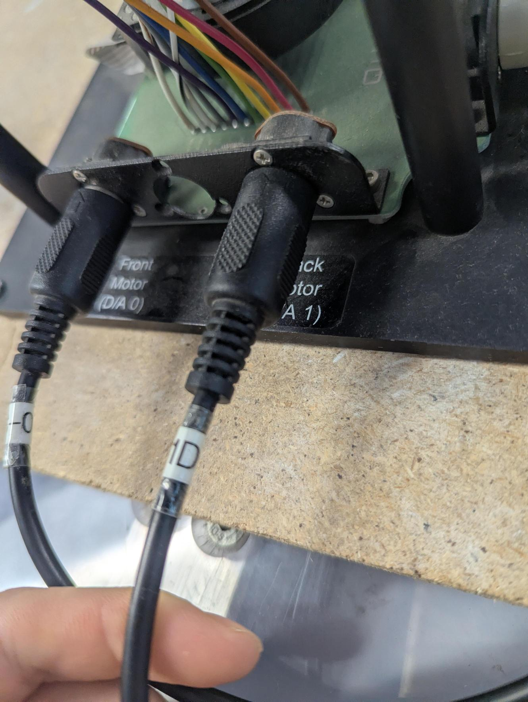
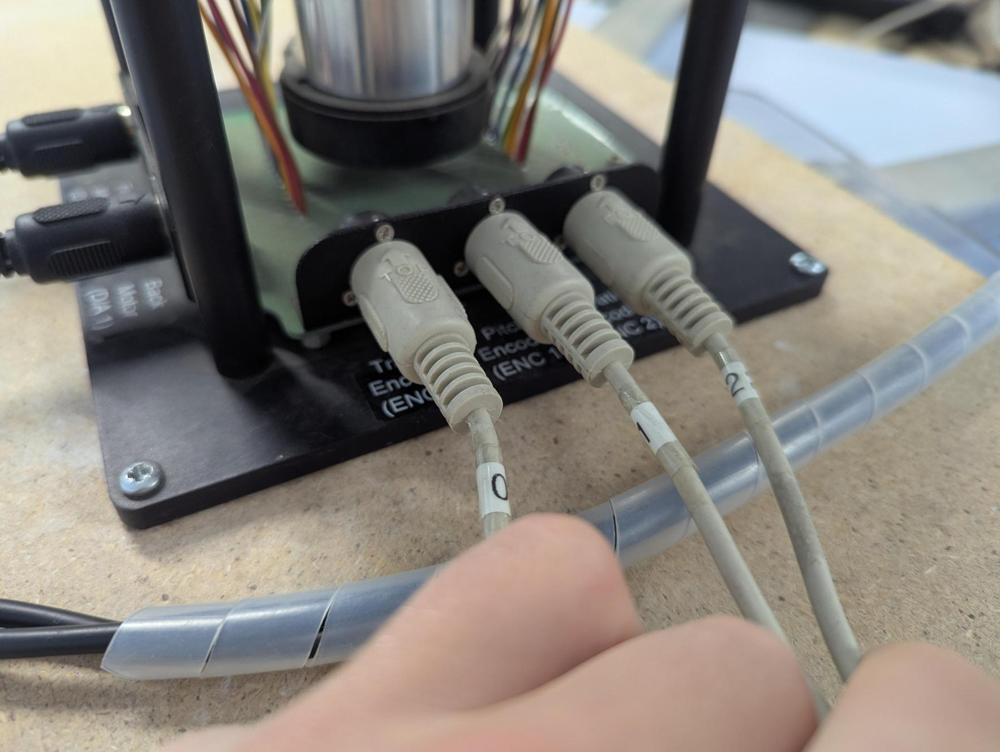
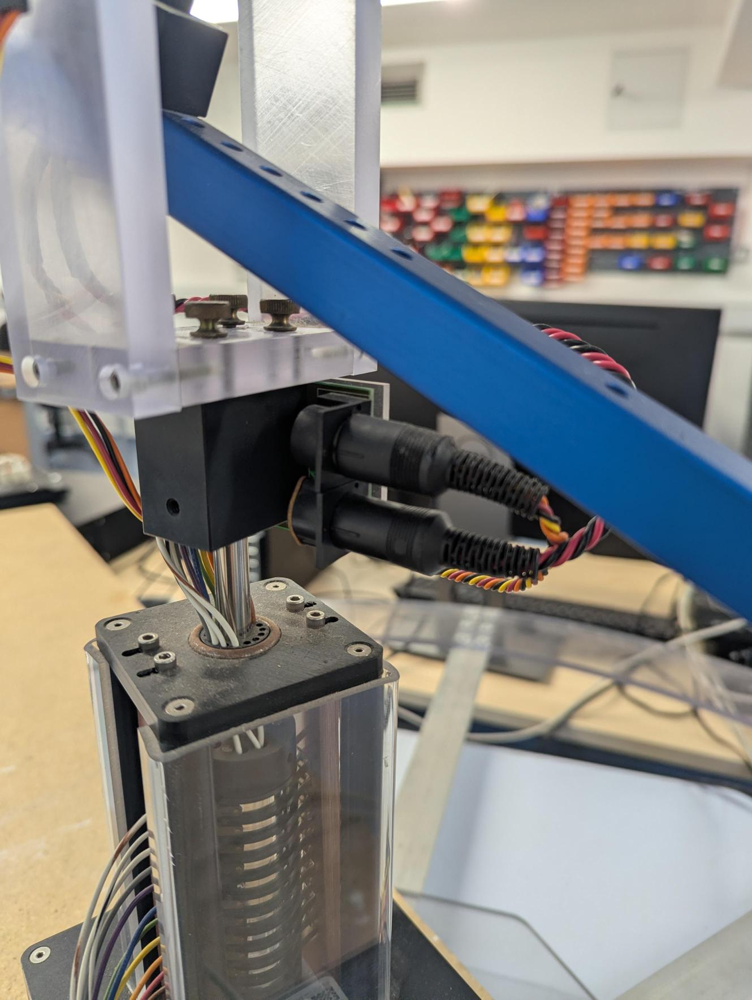
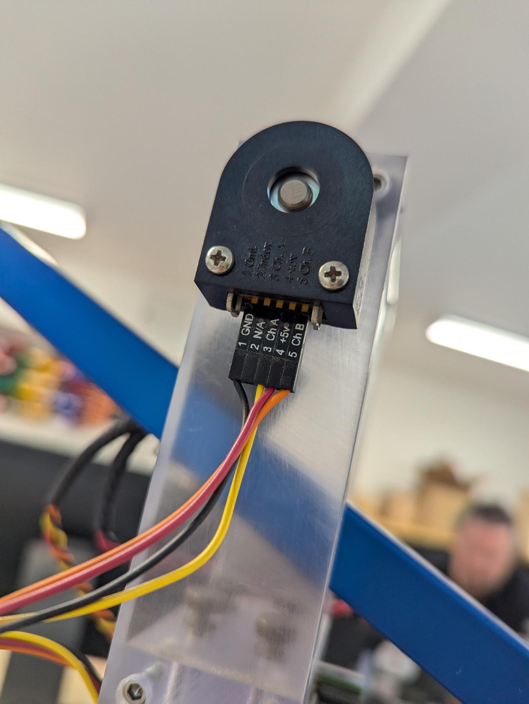
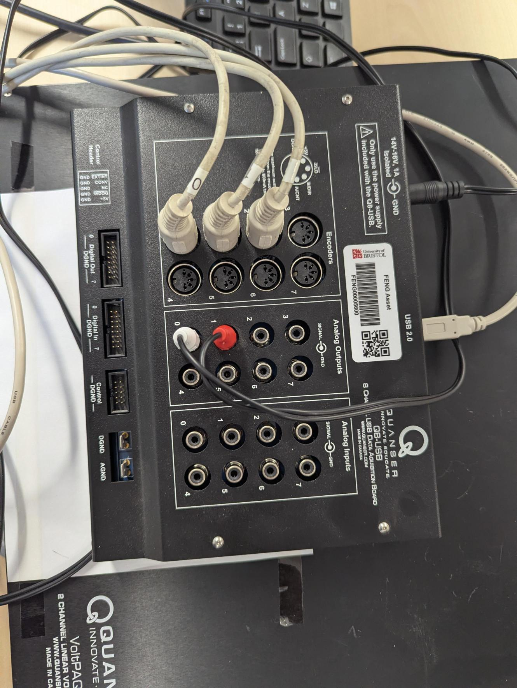
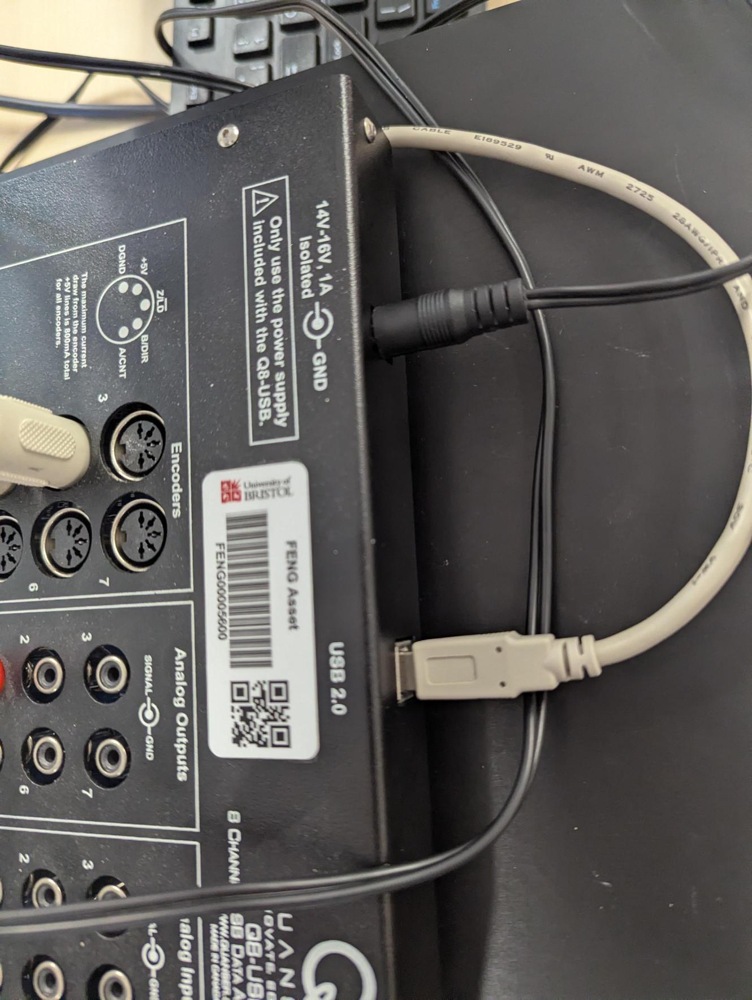
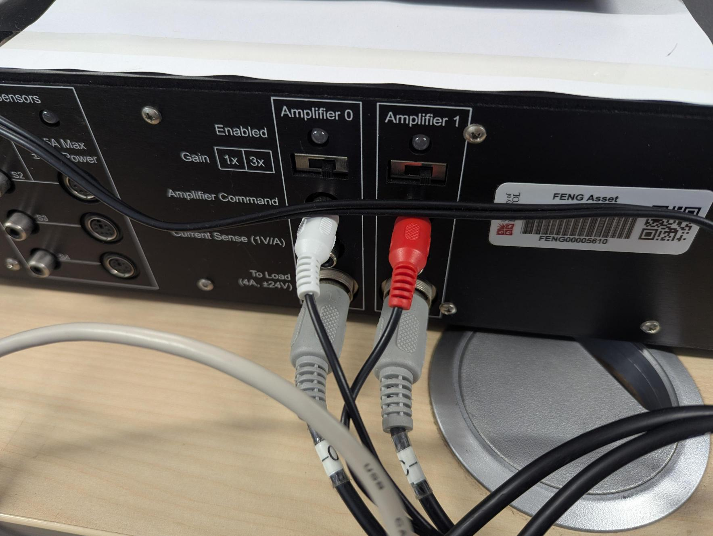

How the rig is wired¶
Part of the staff area. Taken on 22 September 2026, so this is the laboratory as it stands rather than as the manual describes it.
The point of this page is the five minutes at the start of an open-access session when something is not working and nobody can remember which cable goes where.
The signal path, in one line¶
Two analog outputs drive two amplifier channels; three encoders come back in. Everything from the arm reaches the base through the slip ring in the column, which is what lets travel turn without limit.
The motors¶

| Socket | Drives | From |
|---|---|---|
| Front Motor (D/A 0) | the front rotor | VoltPAQ Amplifier 0 |
| Back Motor (D/A 1) | the back rotor | VoltPAQ Amplifier 1 |
The numbering is the thing to get right. Elevation is the sum of the two and pitch is the difference, so swapping them leaves elevation working and inverts pitch, which looks like a tuning problem and is not one.
The encoders¶

| Socket | Measures |
|---|---|
| ENC 0 | travel |
| ENC 1 | pitch |
| ENC 2 | elevation |
The cables are numbered to match, so a cable marked 2 belongs in ENC 2.
Through the column¶

The pitch and elevation encoders sit on the moving part of the machine, so their wiring comes down the column through the slip ring. That is what lets travel rotate continuously instead of winding a loom up until something gives.
At the encoder itself¶

Five pins: 1 Gnd, 2 Index, 3 Ch A, 4 +5 V, 5 Ch B. The mating connector is labelled the same way, and the index line is not used.
Worth knowing rather than acting on: a connector seated one pin out puts +5 V somewhere it should not be. If an axis reads nothing, look at the seating before looking at the software.
The Q8-USB board¶

| On the board | Carries |
|---|---|
| Encoders 0, 1, 2 | travel, pitch, elevation |
| Analog Output 0, white | command to Amplifier 0, the front motor |
| Analog Output 1, red | command to Amplifier 1, the back motor |
| USB | everything, to the bench computer |
White is 0 and red is 1, the whole way through: analog output, amplifier command, amplifier channel. Keeping to that is how you tell at a glance whether anything has been swapped.

The board takes its own 14–16 V supply as well as USB. Both must be in: on USB alone it enumerates and reads nothing, which looks like a broken encoder.
The VoltPAQ amplifier¶

| On the amplifier | Goes to |
|---|---|
| Amplifier Command 0, white | from Q8-USB Analog Output 0 |
| Amplifier Command 1, red | from Q8-USB Analog Output 1 |
| To Load 0 | Front Motor (D/A 0) |
| To Load 1 | Back Motor (D/A 1) |
Each channel is rated 4 A at ±24 V, which is the 24 V the flight envelope works its head-room against.
Both gain switches on 3x, checked 22 September
Each channel has a Gain switch marked 1x and 3x, and both are on 3x. The photograph above makes them look different, which is the angle rather than the rig.
They have to match, and they have to be 3x. The model divides the controller's demand by three before the board, in the block called cable gain pre-compensation, so the amplifier's gain of three puts it back.
Worth knowing for the day one of them gets nudged. If a channel drops to 1x, that motor receives a third of the voltage the other does. Elevation still works, because it is the sum and simply comes out weaker. Pitch is the difference, so it takes a standing offset, and the machine drifts round the track with nothing commanding it. That looks like a faulty rig or a bad controller, and it is a switch.
The amplifier switch is the emergency stop
There is no separate stop button and no software interlock. If the rig does something you do not like, switch the amplifier off.
When something is not working¶
In this order, because it goes from likeliest to least:
- Is the amplifier on, and are both Enabled lights lit?
- Both gain switches on 3x? See above.
- Q8-USB power in as well as USB? USB alone gives no readings.
- Encoder cables in the sockets their numbers match? 0 travel, 1 pitch, 2 elevation.
- White to 0, red to 1, at both ends.
- Only then start looking at the model.
If it is the hardware rather than the wiring, technical services run the laboratory: engf-tech-hub@bristol.ac.uk, with the course code in the subject and the station you were on.